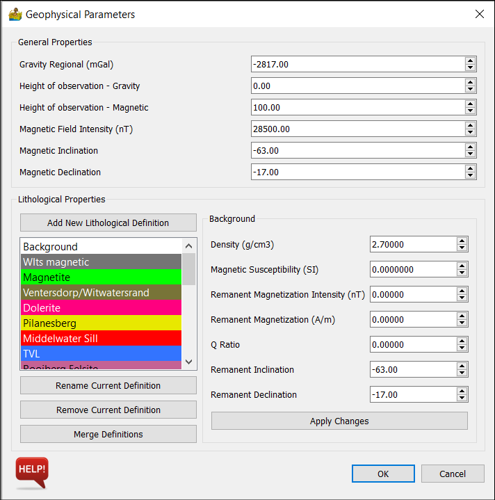
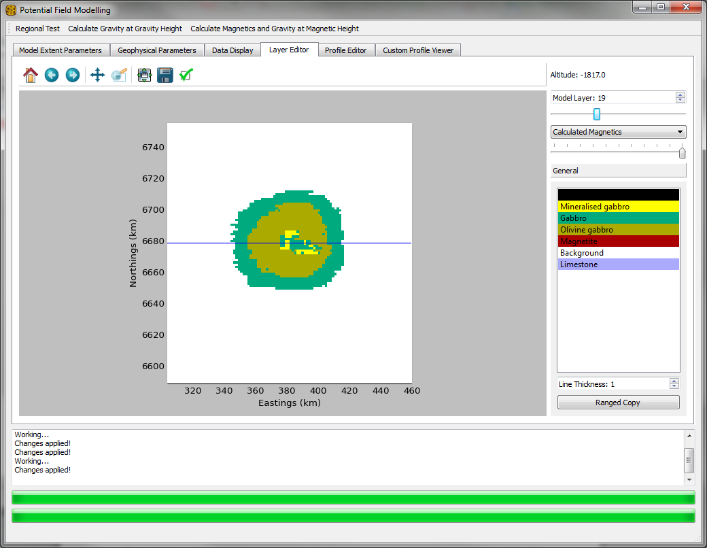

Potential Field Modelling: Description of Modules¶
Import 3D Model¶
This model imported model created in PyGMI. The models use the Numpy .npz format. Each .npz file will contain the voxel model, along with raster datasets associated with that model.
Import Profile Picture¶
This imports a picture to be associated with either an east-west or north-south profile in the model. Typically this could be seismic data, or a cross section from another technique. It accepts a tiff as input. The cordinates for the picture are specified here.
If a .npz file is connected to this module (imported through the import 3D model tool) then appropriate default values for the picture are filled in.

Model Creation and Editing¶
This module is the potential field modelling section of PyGMI. The output from here is a voxel model which can be displayed in 3D using the right-click context menu on a green module. The module comprises a series of Tabs, which are described below. The actual calculation of the magnetic and gravity field data is based on the work by Blakely (1996).
Model Extent Parameters¶
This tab sets up the extents of the model. The Dataset Information section associates connected raster datasets with the either DTM, magnetic data, gravity data or gravity regional data. If you are modelling actual data, this module will insist on DTM data. If nothing else, dtm data can be obtained from the SRTM archives.
The Model Extent Properties section sets up the model extents - by default from an associated DTM. Of importance are the X, Y and Z cell sizes. This determines the number of rows, columns and layers in the model. As a rule of thumb, models bigger than 100x100x100 may be slow, although this will depend on the hardware available.
Any changes here must be accepted using the ‘Accept Proposed Changes’ button.
{kind=link}
Geophysical Parameters¶
This tab allows for the gravity and magnetic properties associated with the model. This includes:
- Gravity Regional Field
- Gravity Height of Observation
- Magnetic Height of Observation
- Magnetic Field Intensity
- Magnetic Inclination
- Magnetic Declination
The lithological properties section defines appropriate properties on a lithology basis. These include:
- Density
- Susceptibilty
- Remanent Magnetisation Intensity
- Q Ratio
- Remanent Inclination
- Remanent Declination
Additional lithologies can be added, removed or renamed here.

Data Display¶
The data display tab shows the input data, calculated output data, as well as the location of the currently modelled profile over that data.
The slider below the image allows for the fading of one dataset into another. This is useful, for example, when comparing calculated gravity data to the measured gravity data.

Layer Editor¶
The layer editor allows for the voxel model to be edited from above. Simply select a lithology and draw the model in, as you would in a paint program. Changing the layer allows for the drawing in of lithologies at deeper depths. Please note that on the first few layers there may be sections which are air (due to the DTM), and are thus not editable.
The ranged copy function allows for the copying of a lithology on the current layer over a range of layers.
{kind=link}
Profile Editor¶
The profile editor allows for the voxel model to be edited from the side. The orientation of east-west or north-south can be changed on the data display tab.
Simply select a lithology and draw the model in, as you would in a paint program. Changing the profile allows for the drawing in of lithologies at different sections on the model. The location of this profile can also be seen on the data display tab.
The calculate button on the main menu bar calculates the forward model. Because of the nature of the algorithm, the slowest calculation will be the first calculation.
The ranged copy function allows for the copying of a lithology on the current profile over a range of profiles.

Custom Profile Viewer¶
The custom profile viewer allows for the display and editing of custom profiles which are not either east-west or north-south. It works in the same manner as the profile editor.
To add the coordinates for the custom profile, click the Add Custom Profile button.